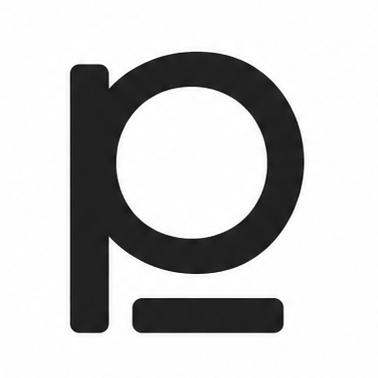

A 1.5-million-parameter, byte-level, multi-head classifier that identifies code language, content type, modality, text language, and risk from raw bytes — no parsing, no dependencies.
Operates directly on raw bytes. No tokenizer, no parser, no language-specific pre-processing. Feed it anything from a Python script to a ZIP file.
Seven specialized classification heads share one backbone: coarse type, modality, subtype, code language, text language, file MIME, and risk.
Just 1.5 million parameters. The self-contained ONNX export is ~9 MB. Runs inference in milliseconds on CPU or directly in your browser. Deploy anywhere — edge, browser, serverless.
Detects 62 programming languages from bytes alone: Python, JavaScript, Rust, Go, C++, Java, SQL, Bash, and 55 more. No shebang or extension required.
Classifies text (EN, FR, HI, more), config files (JSON, YAML, TOML, env), markup (HTML, Markdown, LaTeX), images (PNG, GIF), and binary archives.
Built-in export to ONNX for cross-platform deployment. Comes with a CLI tool and an optional MCP server. Zero-config setup for CI/CD pipelines.
code / text / markup / config / image / binary / error
source / script / markup / prose / serialization / bitmap / archive / traceback
general / web / data / system / shell / build / doc …
62 languages: Python, JS, Rust, Go, Java, C++, SQL, Bash & more
English, French, Hindi, Czech, Polish, …
text/x-python, image/png, application/zip, …
safe / unknown / error
Tested against a hand-curated set covering every coarse type — from Python and JavaScript to ZIP binaries and Hindi text.
| Input | Coarse | Modality | Code/Text Lang | File MIME | Risk |
|---|---|---|---|---|---|
| Python | code | source | Python | text/x-python | safe |
| JavaScript | code | source | JavaScript | text/javascript | safe |
| C | code | source | C | text/x-c | safe |
| Java | code | source | Java | text/x-java | safe |
| SQL | code | script | SQL | text/x-sql | safe |
| Bash | code | script | Bash | text/x-shellscript | safe |
| Rust | code | source | Rust | text/x-rust | safe |
| Go | code | source | Go | text/x-go | safe |
| CSS | code | source | CSS | text/css | safe |
| HTML | markup | markup | — | text/html | safe |
| English text | text | prose | English | text/plain | safe |
| French text | text | prose | French | text/plain | safe |
| Hindi text | text | prose | Hindi | text/plain | safe |
| JSON | config | serialization | — | application/json | safe |
| YAML | error → | serialization | — | text/yaml | safe |
| .env | config | config | — | text/plain | safe |
| Error traceback | error | traceback | — | text/plain | error |
| PNG | image | bitmap | — | image/png | safe |
| GIF | image | bitmap | — | image/gif | safe |
| ZIP archive | binary | archive | — | application/zip | safe |
Only flub: YAML gets error instead of config for coarse type (subtype and MIME are correct). This is a fundamental byte-level ambiguity — YAML content and error messages share byte patterns at the first 2KB.
Sort files, API payloads, or raw network data by type, language, and risk in CI/CD pipelines, upload services, or security tools.
Detect the programming language of unsaved buffers or snippet pastes without relying on file extensions. Works with any editor via the CLI or MCP server.
Route incoming data to the correct processing pipeline based on byte-level content analysis — no need to trust Content-Type headers.
A production-grade reference for multi-task learning, distillation, and byte-level modeling. Study the architecture, extend it, or distill it further.
Install from PyPI and classify any file in seconds. No GPU required. No cloud service. Fully open source.